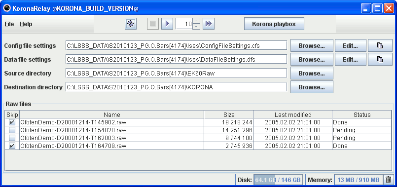

KORONA relay is intended for batch processing.
Launch KORONA playbox for interactive exploration.

Config file settings:
A file containing the paths to config files used by the processing.
Source directory: Location of files to be processed.
Destination directory: Location of the processed files.
status.xml
As KORONA relay processes files, it writes the processing status to the file status.xml in the destination directory.
This is done for several reasons:
To speed up the processing, it is possible to use multiple instances of KORONA relay on different computers.
The status.xml file coordinates the collaboration by the different KORONA relay instances.
The processed files are written with an extra .new file name suffix instead of overwriting existing files.
This is done to not interfere with other programs using the existing files.
The status.xml file is used for coordinating when the existing files are replaced by the .new files.
If the status.xml file becomes corrupt or contains wrong information,
it might be necessary to re-create it.
This can be done in the file menu of KORONA relay.
copiedConfigFiles
When starting processing, KORONA relay will copy the used config files to the subdirectory copiedConfigFiles
in the destination directory.
The files in this directory are automatically updated.
NB: Manual edits will be overwritten!